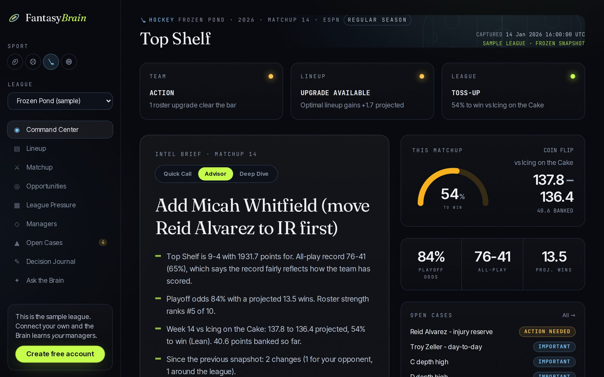

Your league
is the model.
Rankings are written for an average league, and nobody plays in one. FantasyBrain reads your league: every roster, matchup, free agent and transaction. Then it briefs you like a staff analyst: the situation, your options, how confident it is, and why now. You make the call.

The command center, shown on a synthetic sample league with fictional players.
An analyst who has already read your whole league.
Lineup optimizer
Solves your starting lineup exactly, flex and utility slots included, using injury-adjusted projections and lineup locks.
Matchup odds
Win probability for this week's matchup from points banked and the variance still to play, with the posture that fits.
Opportunity scanner
Every free agent against every droppable player, with the case for acting now, and "no move" when nothing clears the bar.
League pressure
Position supply and demand across every roster, playoff odds from thousands of simulated seasons, and who is likely to bid against you.
Trade finder
One-for-one ideas where both lineups improve, with a warning when a deal would arm a likely playoff rival.
Ask the Brain
A chat assistant grounded in your league's current state. It separates facts from assessments and says how sure it is.
One Brain, four sports.
Each sport has its own playbook: positions and flex rules, when lineups lock, and what wins a matchup. Points leagues are supported today.
Football
BetaKickoff windows, the weekly waiver run, and FLEX solved exactly.
Baseball
PreviewGames played, two-start pitchers, and daily lineup locks.
Hockey
PreviewFour-game weeks, confirmed goalies, multi-position forwards.
Basketball
PreviewMinutes, rest days, and games per week.
You stay in command.
FantasyBrain advises. It never sets your lineup, makes a move, or messages your league.
- Connect your league. Import a league you play in. Connections are read-only.
- Get the brief. Situation, options, a preferred call with a confidence level (Strong, Moderate or Lean), and why now.
- Decide. Accept, override or defer. Your decision journal scores lineup calls against what actually happened.
- Hold when it's right. "No action" is a real recommendation. Waiver priority and roster spots are worth protecting.
Read-only, yours, never sold.
FantasyBrain uses fantasy data only to advise the manager who connected it. Full details are in the privacy policy.
- Read only. FantasyBrain only reads your fantasy leagues. It never changes lineups, makes transactions or posts in your league.
- Only leagues you import. League data is fetched for leagues you choose, when you open them or ask for a refresh.
- Private to you. A league's analysis is shown only to the manager who imported it. Manager names and platform user IDs aren't stored.
- Never sold, never ads. League data isn't sold, shared with advertisers, or used to build ad profiles.
- Encrypted and deletable. Access tokens are encrypted at rest. Disconnect anytime, export your data, or delete your account and everything in it.
Pay for the season. Not for the tricks.
Same Brain in every plan
Plans differ in how many leagues and questions you get, never in the quality of the advice.
One-time passes
A pass covers a season. There's no subscription that silently renews.
Renew on evidence
Your decision journal shows what the calls were worth, so renewing is a decision you make with data.